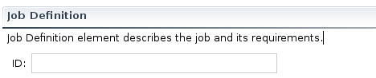
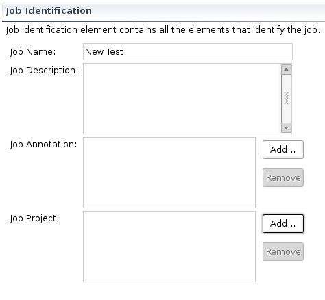

The Job Definition page provides an interface for manipulating general requirements of the job. It consists of two sections: the Job Definition and Job Identification.
This section allows to manipulate the JobDefinition element of a JSDL document. The JobDefinition element is the root element of a JSDL document and contains the JobDescription element.
An ID is optional and defines the ID of the Job Definition document.
This section allows to manipulate the JobIdenification element of a JSDL document. This element contains other elements that identify a job.
A Job Name is optional and specifies the name of the job in a JSDL document. The Job name is of type "String" and may not be unique to a particular JSDL document.
A Job Description is optional and provides, human readable, description about the job. The Job Description is of type "String".
A Job Annotation is optional and annotates the job. The Job Annotation is of type "String" and may include information that can be used by the consuming system. Press Add... for opening an input dialog to insert a Job Annotation. Press Remove to remove the selected Job Annotation.
A Job Project is optional and specifies the project to which the job belongs. The Job Project is of type "String" and may include information that can be used by the consuming system. Press Add.. for opening an input dialog to insert a Job Project. Press Remove to remove the selected Job Project.